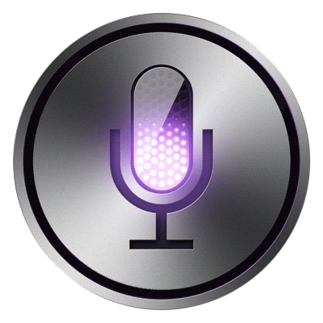

{% block talk %}
    <script src="../static/js/luying1.js"></script>
    <div style="position: fixed;top: 80%;left:90%">
        
        <input type="text" style="display: none" id="po">
    </div>
    <script>
        var recorder;
        var audio = document.querySelector('audio');

        function lu1() {
            document.getElementById('pl1').src = '../../static/image/yuyin1.gif';
            HZRecorder.get(function (rec) {
                recorder = rec;
                recorder.start();
            });
        }

        function li1() {
            document.getElementById('pl1').src = '../../static/image/yuyin.png';
            recorder.stop();
            recorder.upload('/myapp/yuying/', function (can) {
                if (can == 1)
                    alert('没听清')
                else if (can != '正在翻译中....')
                    window.location.href = can
            })
        }
    </script>
{% endblock %}